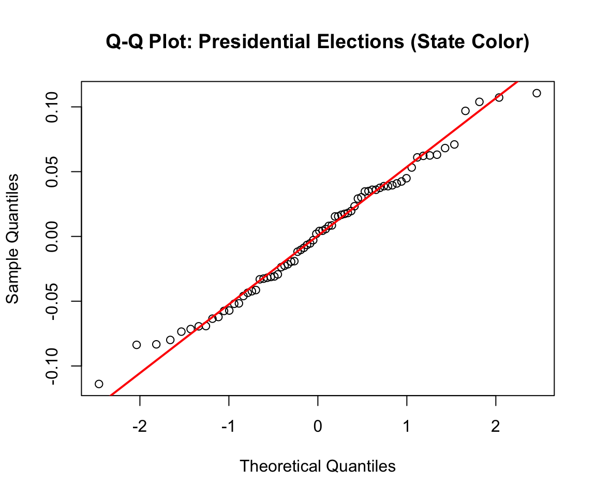

Code
anova_pres <- aov(vep_turnout_rate ~ state_color, data = df_pres)
qqnorm(residuals(anova_pres), main = "Q-Q Plot: Presidential Elections (State Color)")
qqline(residuals(anova_pres), col = "red", lwd = 2)

Figure 1: Q-Q Plot - Presidential Voter Turnout by State Color
anova_pres <- aov(vep_turnout_rate ~ state_color, data = df_pres)
qqnorm(residuals(anova_pres), main = "Q-Q Plot: Presidential Elections (State Color)")
qqline(residuals(anova_pres), col = "red", lwd = 2)Q-Q plot of residuals showing normality assessment for presidential election ANOVA model. Points closely follow the theoretical normal distribution line.
Figure 2: Q-Q Plot - Midterm Voter Turnout by State Color
anova_midterm <- aov(vep_turnout_rate ~ state_color, data = df_midterm)
qqnorm(residuals(anova_midterm), main = "Q-Q Plot: Midterm Elections (State Color)")
qqline(residuals(anova_midterm), col = "red", lwd = 2)Q-Q plot of residuals showing normality assessment for midterm election ANOVA model. Points align well with the theoretical normal distribution line.
Figure 3: Q-Q Plot - Presidential Turnout by Violent Crime Group
crime_voter_pres <- crime_voter_pres %>%
mutate(violent_crime_group = ntile(violent_crime_rate, 3))
anova_pres_crime <- aov(normalized_vep_turnout ~ factor(violent_crime_group), data = crime_voter_pres)
qqnorm(residuals(anova_pres_crime), main = "Q-Q Plot: Presidential Elections (Crime)")
qqline(residuals(anova_pres_crime), col = "red", lwd = 2)Q-Q plot of residuals from the presidential turnout one-way ANOVA model by violent crime grouping. Residuals closely follow the theoretical normal distribution, indicating approximate normality.
Figure 4: Violent Crime Breakdown by Offense Type
# Read crime data including United States
crime_all <- read_csv("data/processed-data/crime_data_yearly_clean.csv") %>%
filter(!(State == "Florida" & Year == 1988))
# Plot with all states including United States
ggplot(crime_all, aes(x = Year, y = violent_crime_rate, color = State)) +
geom_line(linewidth = 1.0) +
scale_color_manual(values = c(
"United States" = "black",
"California" = "#E69F00",
"Florida" = "#F0E442",
"Michigan" = "#56B4E9",
"New York" = "#CC79A7",
"Ohio" = "#009E73",
"Utah" = "#D55E00"
)) +
labs(
title = "Violent Crime Breakdown by Offense Type",
x = "Year",
y = NULL
) +
theme_minimal() +
theme(
plot.title = element_text(face = "bold", size = 14),
legend.position = "top",
legend.title = element_blank(),
panel.border = element_rect(color = "black", fill = NA, linewidth = 1),
panel.grid.minor = element_blank()
)
Line plot of violent crime rates from 1986-2024 for selected states and U.S. Note: Violent crime rates peaked during the late 1980s and early 1990s before declining sharply and stabilizing throughout the 2000s.
Figure 5: Bootstrap Distribution - Presidential Voter Turnout (Crime Eras)
crime_voter_pres$crime_era <- ifelse(crime_voter_pres$Year < 2001, "High_crime_era", "Low_crime_era")
high_era <- crime_voter_pres$normalized_vep_turnout[crime_voter_pres$crime_era == "High_crime_era"]
low_era <- crime_voter_pres$normalized_vep_turnout[crime_voter_pres$crime_era == "Low_crime_era"]
set.seed(100)
boot_diff_pres <- replicate(5000, {
mean(sample(low_era, replace = TRUE)) -
mean(sample(high_era, replace = TRUE))
})
ci_pres <- quantile(boot_diff_pres, c(0.025, 0.975))
hist(boot_diff_pres, breaks = 30,
main = "Bootstrap Distribution: Presidential Elections",
xlab = "Difference in Means (Low - High Crime Era)",
col = "steelblue", border = "black")
abline(v = ci_pres, col = "red", lty = 2, lwd = 2)
legend("topright", legend = "95% CI", col = "red", lty = 2, lwd = 2)
Histogram of bootstrap distribution of mean differences in presidential voter turnout between high-crime and low-crime eras. The 95% confidence interval [4.04, 8] is depicted by red dotted lines.
Figure 6: Q-Q Plot - Midterm Turnout by Violent Crime Group
crime_voter_midterm <- crime_voter_midterm %>%
mutate(violent_crime_group = ntile(violent_crime_rate, 3))
anova_midterm_crime <- aov(normalized_vep_turnout ~ factor(violent_crime_group), data = crime_voter_midterm)
qqnorm(residuals(anova_midterm_crime), main = "Q-Q Plot: Midterm Elections (Crime)")
qqline(residuals(anova_midterm_crime), col = "red", lwd = 2)
Q-Q plot of residuals from the midterm turnout one-way ANOVA model by violent crime grouping. Residuals closely follow the theoretical normal distribution with only minor deviations in the tails.
Figure 7: Bootstrap Distribution - Midterm Voter Turnout (Crime Eras)
crime_voter_midterm$crime_era <- ifelse(crime_voter_midterm$Year < 2001, "High_crime_era", "Low_crime_era")
high_era_mid <- crime_voter_midterm$normalized_vep_turnout[crime_voter_midterm$crime_era == "High_crime_era"]
low_era_mid <- crime_voter_midterm$normalized_vep_turnout[crime_voter_midterm$crime_era == "Low_crime_era"]
set.seed(100)
boot_diff_midterm <- replicate(5000, {
mean(sample(low_era_mid, replace = TRUE)) -
mean(sample(high_era_mid, replace = TRUE))
})
ci_midterm <- quantile(boot_diff_midterm, c(0.025, 0.975))
hist(boot_diff_midterm, breaks = 30,
main = "Bootstrap Distribution: Midterm Elections",
xlab = "Difference in Means (Low - High Crime Era)",
col = "coral", border = "black")
abline(v = ci_midterm, col = "red", lty = 2, lwd = 2)
legend("topright", legend = "95% CI", col = "red", lty = 2, lwd = 2)
Histogram of bootstrap distribution of mean differences in midterm voter turnout between crime eras. The 95% confidence interval [-1.14, 3.81] is depicted by red dotted lines.
Figure 8: Permutation Distribution - Presidential Elections
set.seed(5100)
n_permutations <- 10000
observed_cor_pres <- cor(weather_turnout_pres$tavg,
weather_turnout_pres$vep_turnout_rate,
use = "complete.obs")
permuted_cors_pres <- numeric(n_permutations)
for (i in 1:n_permutations) {
shuffled_turnout <- sample(weather_turnout_pres$vep_turnout_rate)
permuted_cors_pres[i] <- cor(weather_turnout_pres$tavg,
shuffled_turnout,
use = "complete.obs")
}
p_value_pres <- mean(abs(permuted_cors_pres) >= abs(observed_cor_pres))
tibble(correlation = permuted_cors_pres) %>%
ggplot(aes(x = correlation)) +
geom_histogram(bins = 50, fill = "steelblue", color = "black", alpha = 0.7) +
geom_vline(xintercept = observed_cor_pres, color = "red",
linetype = "dashed", linewidth = 1.0) +
geom_vline(xintercept = -observed_cor_pres, color = "red",
linetype = "dashed", linewidth = 1.0) +
labs(title = "Permutation Distribution: Presidential Elections",
subtitle = sprintf("Observed r = %.4f, p-value = %.4f",
observed_cor_pres, p_value_pres),
x = "Correlation Coefficient",
y = "Frequency") +
theme_minimal() +
theme(plot.title = element_text(face = "bold", size = 14),
plot.subtitle = element_text(size = 12))Permutation distribution of the correlation between Election Day temperature and voter turnout in presidential elections. The distribution is centered near zero, and the observed correlation falls within the null distribution, indicating no statistically significant linear relationship.
Figure 9: Permutation Distribution - Midterm Elections
observed_cor_midterm <- cor(weather_turnout_midterm$tavg,
weather_turnout_midterm$vep_turnout_rate,
use = "complete.obs")
permuted_cors_midterm <- numeric(n_permutations)
for (i in 1:n_permutations) {
shuffled_turnout <- sample(weather_turnout_midterm$vep_turnout_rate)
permuted_cors_midterm[i] <- cor(weather_turnout_midterm$tavg,
shuffled_turnout,
use = "complete.obs")
}
p_value_midterm <- mean(abs(permuted_cors_midterm) >= abs(observed_cor_midterm))
tibble(correlation = permuted_cors_midterm) %>%
ggplot(aes(x = correlation)) +
geom_histogram(bins = 50, fill = "coral", color = "black", alpha = 0.7) +
geom_vline(xintercept = observed_cor_midterm, color = "red",
linetype = "dashed", linewidth = 1.0) +
geom_vline(xintercept = -observed_cor_midterm, color = "red",
linetype = "dashed", linewidth = 1.0) +
labs(title = "Permutation Distribution: Midterm Elections",
subtitle = sprintf("Observed r = %.4f, p-value = %.4f",
observed_cor_midterm, p_value_midterm),
x = "Correlation Coefficient",
y = "Frequency") +
theme_minimal() +
theme(plot.title = element_text(face = "bold", size = 14),
plot.subtitle = element_text(size = 12))
Permutation distribution of the correlation between Election Day temperature and voter turnout in midterm elections. The observed correlation lies within the null distribution, providing no evidence of a significant linear association.
Figure 10: Q-Q Plot - Midterm Turnout by Unemployment Group
econ_voter_midterm <- econ_voter_midterm %>%
mutate(unemployment_group = ntile(Unemployment_Rate, 3))
anova_midterm_unemp <- aov(normalized_vep_turnout ~ factor(unemployment_group), data = econ_voter_midterm)
qqnorm(residuals(anova_midterm_unemp), main = "Q-Q Plot: Midterm Elections (Unemployment)")
qqline(residuals(anova_midterm_unemp), col = "red", lwd = 2)Q-Q plot of residuals for midterm election normalized voter turnout by unemployment rate group.
Figure 11: Q-Q Plot - Midterm Turnout by Income Group
econ_voter_midterm <- econ_voter_midterm %>%
mutate(income_group = ntile(Household_Income, 3))
anova_midterm_income <- aov(normalized_vep_turnout ~ factor(income_group), data = econ_voter_midterm)
qqnorm(residuals(anova_midterm_income), main = "Q-Q Plot: Midterm Elections (Income)")
qqline(residuals(anova_midterm_income), col = "red", lwd = 2)Q-Q plot of residuals for midterm election normalized voter turnout by median household income group.
Figure 12: Q-Q Plot - Midterm Turnout by HPI Group
econ_voter_midterm <- econ_voter_midterm %>%
mutate(hpi_group = ntile(HPI, 3))
anova_midterm_hpi <- aov(normalized_vep_turnout ~ factor(hpi_group), data = econ_voter_midterm)
qqnorm(residuals(anova_midterm_hpi), main = "Q-Q Plot: Midterm Elections (HPI)")
qqline(residuals(anova_midterm_hpi), col = "red", lwd = 2)
Q-Q plot of residuals for midterm election normalized voter turnout by housing price index group.
Figure 13: Q-Q Plot - Presidential Turnout by Unemployment Group
econ_voter_pres <- econ_voter_pres %>%
mutate(unemployment_group = ntile(Unemployment_Rate, 3))
anova_pres_unemp <- aov(normalized_vep_turnout ~ factor(unemployment_group), data = econ_voter_pres)
qqnorm(residuals(anova_pres_unemp), main = "Q-Q Plot: Presidential Elections (Unemployment)")
qqline(residuals(anova_pres_unemp), col = "red", lwd = 2)Q-Q plot of residuals for presidential election normalized voter turnout by unemployment rate group.
Figure 14: Q-Q Plot - Presidential Turnout by Income Group
econ_voter_pres <- econ_voter_pres %>%
mutate(income_group = ntile(Household_Income, 3))
anova_pres_income <- aov(normalized_vep_turnout ~ factor(income_group), data = econ_voter_pres)
qqnorm(residuals(anova_pres_income), main = "Q-Q Plot: Presidential Elections (Income)")
qqline(residuals(anova_pres_income), col = "red", lwd = 2)Q-Q plot of residuals for presidential election normalized voter turnout by median household income group.
Figure 15: Q-Q Plot - Presidential Turnout by HPI Group
econ_voter_pres <- econ_voter_pres %>%
mutate(hpi_group = ntile(HPI, 3))
anova_pres_hpi <- aov(normalized_vep_turnout ~ factor(hpi_group), data = econ_voter_pres)
qqnorm(residuals(anova_pres_hpi), main = "Q-Q Plot: Presidential Elections (HPI)")
qqline(residuals(anova_pres_hpi), col = "red", lwd = 2)
Q-Q plot of residuals for presidential election normalized voter turnout by housing price index group.
Figure 16: ACF & PACF Plots - Florida Unemployment (Differenced Series)
par(mfrow = c(1, 2))
acf(fl_diff, main = "ACF: Florida (Differenced)", lag.max = 20)
pacf(fl_diff, main = "PACF: Florida (Differenced)", lag.max = 20)Autocorrelation and partial autocorrelation function plots for Florida unemployment rate after first-order differencing.
Figure 17: ACF & PACF Plots - California Unemployment (Differenced Series)
par(mfrow = c(1, 2))
acf(ca_diff, main = "ACF: California (Differenced)", lag.max = 20)
pacf(ca_diff, main = "PACF: California (Differenced)", lag.max = 20)
Autocorrelation and partial autocorrelation function plots for California unemployment rate after first-order differencing.
Figure 18: ACF & PACF Plots - Michigan Unemployment (Differenced Series)
par(mfrow = c(1, 2))
acf(mi_diff, main = "ACF: Michigan (Differenced)", lag.max = 20)
pacf(mi_diff, main = "PACF: Michigan (Differenced)", lag.max = 20)Autocorrelation and partial autocorrelation function plots for Michigan unemployment rate after first-order differencing.
Michigan unemployment forecast for 2025-2026 using ARIMA(0,1,0) random walk model with 95% confidence interval showing wider uncertainty.
All analysis code, data cleaning scripts, and reproducible workflows are available in the project repository:
GitHub Repository: https://github.com/np767/DSAN-5100-Final-Project
DSAN-5100-Final-Project/
├── data/ # Raw and processed datasets
├── scripts/
│ ├── crime-testing-*.qmd # Crime analysis
│ ├── voter_econ_*_testing.Rmd # Economic analysis
│ ├── weather_turnout_testing.qmd # Weather analysis
│ └── time-series/ # ARIMA models
├── *-data-cleaning.* # Data cleaning scripts
├── *-data-eda.* # Exploratory analysis
└── website files # Quarto website source